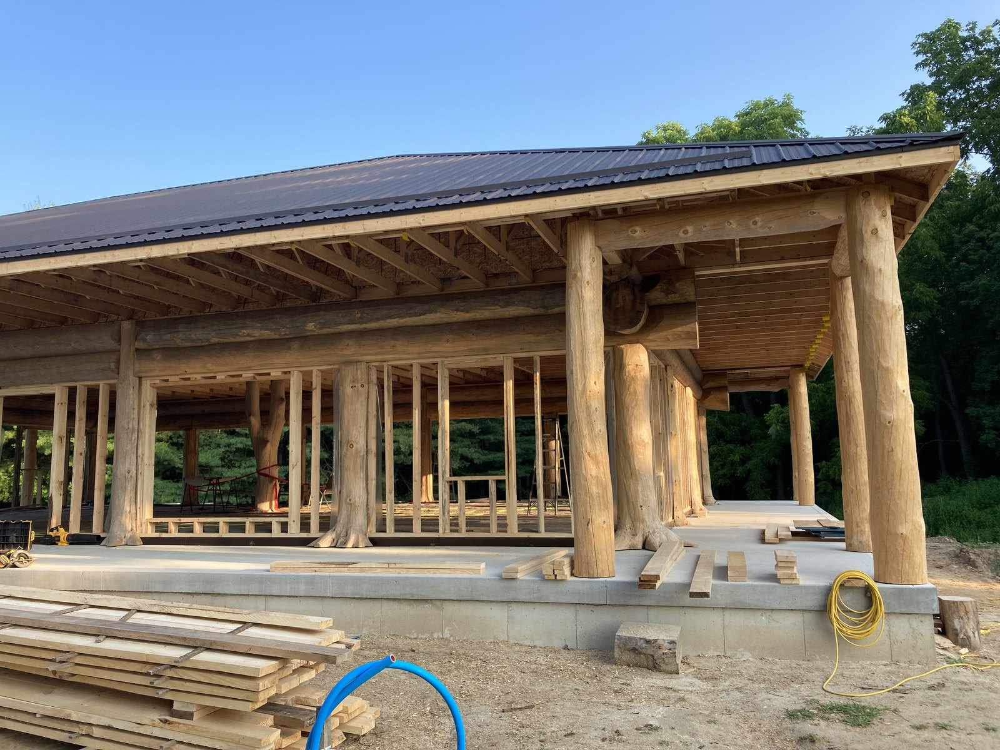
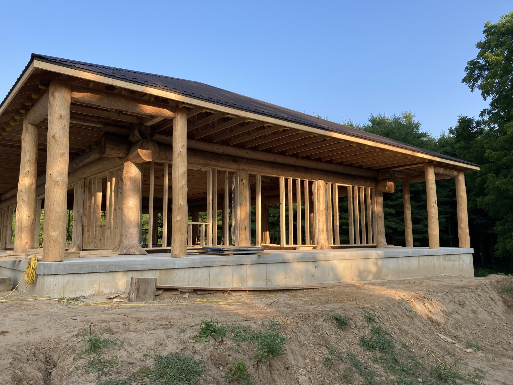
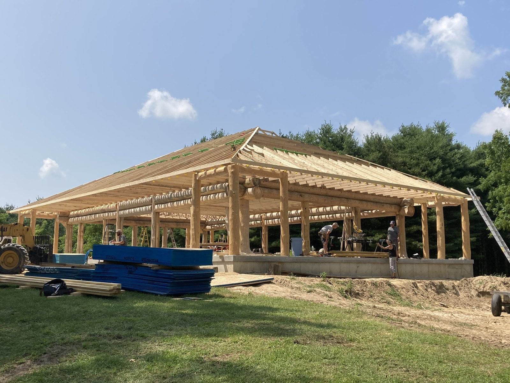

Custom Homes
Custom home framing, builder support, and site coordination for residential builds.
Learn MoreCustom cottage homes
Cottage-focused residential builds planned around structure, exterior details, and site conditions.
Cottage builds
A custom cottage home needs practical framing, durable exterior planning, and clear coordination before the next trades arrive. Cutting Edge Carpentry helps homeowners and builders move cottage projects through the framing stage with cleaner structure and communication.
The work is strongest when drawings, site access, foundation readiness, seasonal timing, and exterior details are reviewed before the crew starts.


Project fit
These projects are a fit when the carpentry scope, site conditions, and project lead are clear enough to plan the work properly.
Framing support for cottage builds where structure, exterior exposure, and site access all need early planning.
Cottage projects with covered entries, porches, posts, roof tie-ins, and exterior wood details.
Projects where the framing scope, drawings, permit status, and project responsibilities are ready to review.
On site
Project photos show the framing, porch work, and exterior structure that matter on a cottage build.


Planning notes
These are the details that make the first quote conversation and the build sequence cleaner.
Process
A clear sequence helps keep pricing, scheduling, and handoffs easier to manage.
Discuss drawings, property location, access, timeline, and the carpentry role in the cottage build.
Map out materials, sequencing, roof structure, porch details, exterior exposure, and crew needs.
Complete framing work with practical attention to structure, site conditions, and communication.
Leave the cottage structure ready for inspection needs and the next construction stages.
Related services
Many residential projects overlap. These related pages help narrow the right fit.
Custom home framing, builder support, and site coordination for residential builds.
Learn MoreRough framing and structural carpentry support for new builds, additions, garages, and renovation projects.
Learn MoreFunctional framed spaces for storage, tools, work, and property use.
Learn MoreFAQ
Common questions about custom cottage homes and residential carpentry support.
A cottage build often has different site access, seasonal timing, exterior exposure, rooflines, porch details, and layout goals. Those details should be reviewed before framing and material planning start.
Yes. Cutting Edge Carpentry can review cottage drawings, structural notes, site access, foundation readiness, material staging, and the framing scope before quoting the work.
Most new cottage builds and major structural projects need permits and may need engineering. Requirements vary by municipality and property, so confirm the permit path before construction begins.
Send the property location, drawings, structural notes, desired timeline, permit status, photos, and any known site constraints such as lane access, slope, storage, or seasonal restrictions.
Start a cottage build
Send the project details and Cutting Edge Carpentry will help you take the next step.
Location
Serving London, Straffordville, and nearby Southwestern Ontario with residential carpentry and construction.